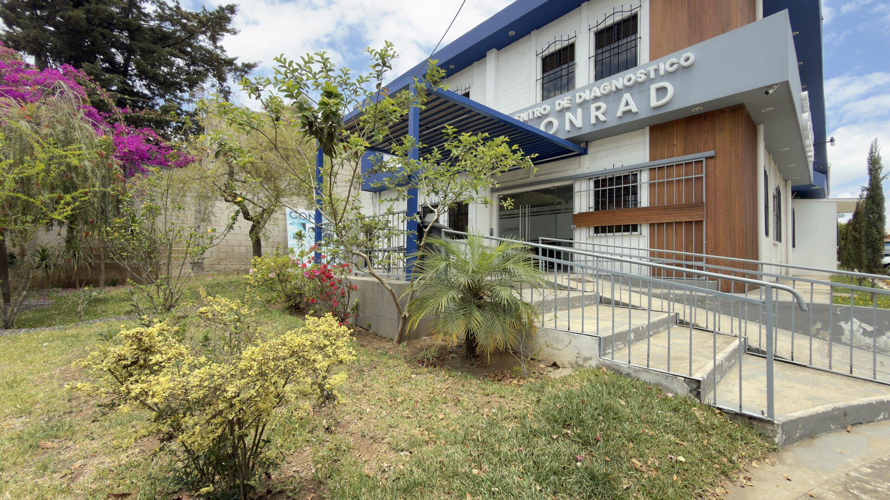
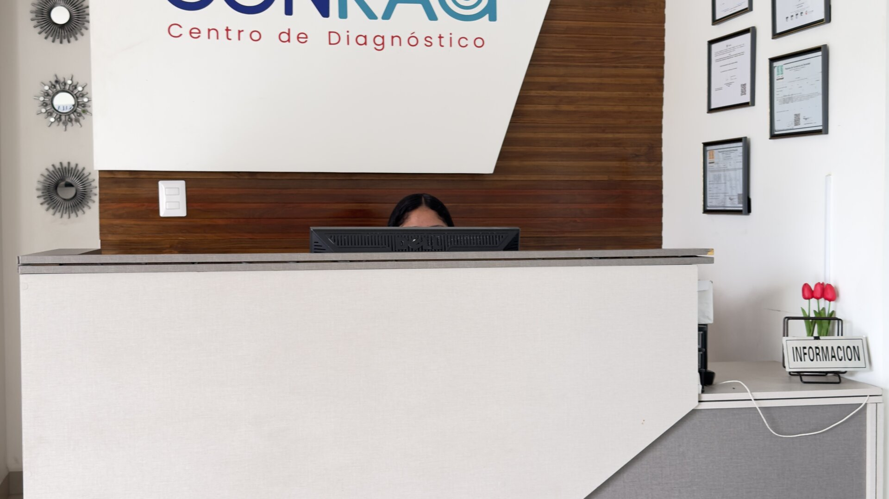

En CONRAD contamos con tecnología de última generación para rayos X, ultrasonidos, tomografías y más. Tu salud merece el mejor diagnóstico.
Más que un centro de diagnóstico — somos un equipo comprometido con tu salud y la de tu familia.
Proporcionar servicios de diagnóstico de imagen y laboratorio con tecnología de vanguardia, personal especializado y trato humano, contribuyendo al bienestar y salud de la comunidad de Chimaltenango y sus alrededores.
Ser reconocidos como el centro de diagnóstico de mayor confianza y calidad en el occidente de Guatemala, liderando con innovación tecnológica y expandiendo nuestro alcance para impactar más vidas.
Un camino de crecimiento al servicio de Chimaltenango y su gente.
Abrimos con un propósito claro: acercar el diagnóstico de calidad a la comunidad, sin tener que viajar lejos.
Incorporamos tomógrafo CT, ultrasonido 5D y mamografía digital para ofrecer más estudios en un solo lugar.
Creamos el programa de médicos referentes con portal exclusivo para dar seguimiento a cada paciente.
Más de 500 pacientes atendidos y más de 100 médicos que confían en nosotros. Y seguimos creciendo.
Diagnóstico integral con equipos de última generación y personal especializado en Chimaltenango.
Cabeza, tórax, columna, extremidades y estudios especiales con contraste. 7 categorías.
Obstétrico 5D, Doppler, abdominal, mamario, tiroides. Diagnóstico en tiempo real.
Tomógrafo CT de alta definición. Cerebral, tórax, abdominal, angioHepático y más de 30 estudios.
Más de 30 estudios con tomógrafo CT de alta definición y reconstrucciones 3D.
Agendar por WhatsAppAnálisis clínicos completos con resultados oportunos y precisos.
Análisis clínicos completos con entrega oportuna y precisa.
Agendar por WhatsAppMamografía digital de alta resolución para detección temprana y seguimiento.
Mamografía digital de alta resolución para detección temprana y seguimiento. Tecnología digital de última generación.
Electrocardiograma, Papanicolau, tarjeta de pulmones y estudios complementarios.
Evaluación radiológica pulmonar para certificados laborales, IGSS, empresas y seguimiento médico.
Agendar por WhatsApp
Entrega ágil para que tu tratamiento no espere.
Equipos calibrados para diagnósticos exactos y confiables.
Técnicos certificados y médicos radiólogos con amplia experiencia.
Céntrico en Chimaltenango, fácil de llegar desde toda la región.
La confianza de cada paciente es nuestra mayor motivación.
"Excelente servicio, resultados muy rápidos y el personal muy amable. Me hice un ultrasonido obstétrico y la calidad de imagen fue increíble. Los recomiendo totalmente."
"Me enviaron a hacerme una tomografía de urgencia y en CONRAD me atendieron de inmediato. El equipo es moderno y el médico radiólogo explicó el resultado con mucha claridad. Muy profesionales."
"Llevo 2 años enviando a mis pacientes a CONRAD y siempre me reportan que la atención es excelente. Los resultados llegan rápido y con calidad diagnóstica muy buena. Lo recomiendo a todos mis colegas."
Refiere a tus pacientes y obtén comisiones atractivas, portal exclusivo con estadísticas en tiempo real y seguimiento detallado de cada caso.
Agenda tu cita hoy. Atención rápida y resultados confiables en Chimaltenango.